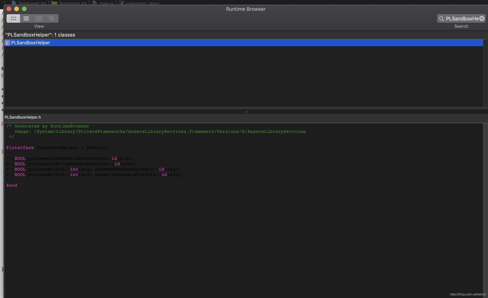
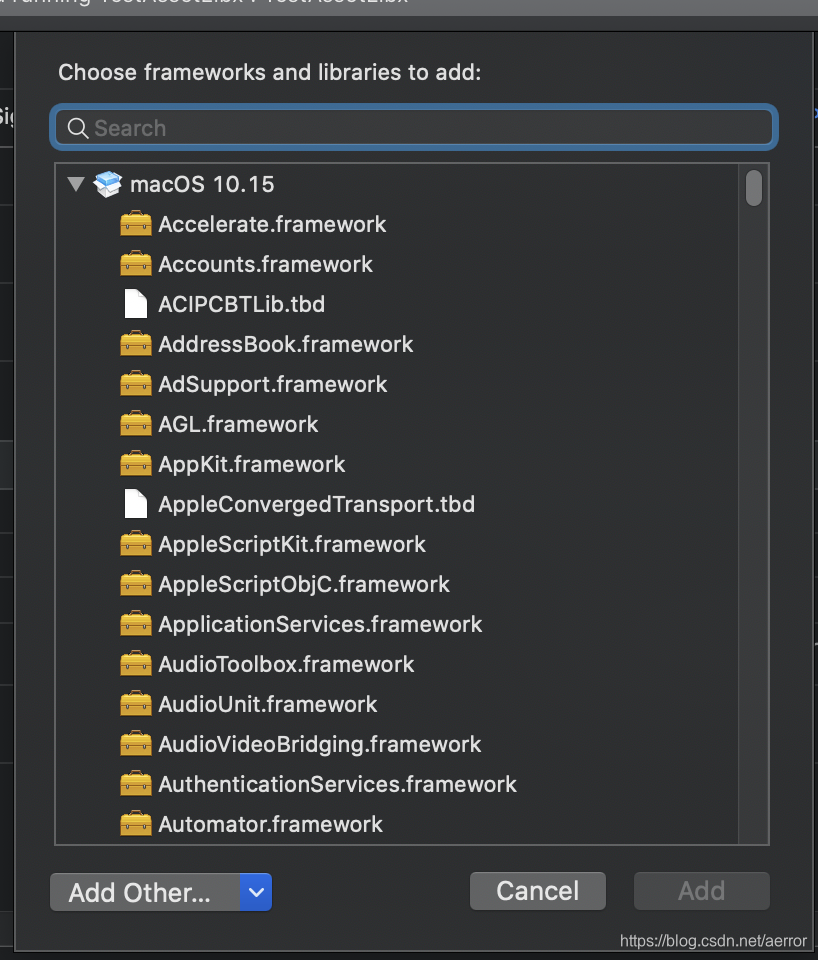

我需要写个程序调用一下[PLSandboxHelper processCanReadSandboxForPath], 它是一个由AssetsLibraryServices.framework(/System/Library/PrivateFrameworks/AssetsLibraryServices.framework)提供的。有两个问题要解决：
1. 没有这个的头文件， 不解决，编译就会不过
2.Frameworks那里在 Link Binary With Library里没有列出PrivateFrameworks的，不解决链接会失败.
对于1. 我们可以到https://github.com/nst/RuntimeBrowser/ 下载这个RuntimeBrowser, 打开这个/System/Library/PrivateFrameworks/AssetsLibraryServices.framework, 如图，我们可以拿到这个类的定义。

我们把这个定义copy出来，问题解决
对于2.
我们使用Add Other把/System/Library/PrivateFrameworks/AssetsLibraryServices.framework/Versions/A/AssetsLibraryServices加进来就好了， 记得不是add AssetsLibraryServices.framework, 而是 AssetsLibraryServices这个二进制文件.

代码如下：
#import <Foundation/Foundation.h>
@interface PLSandboxHelper : NSObject
+ (BOOL)processCanReadSandboxForPath:(id)arg1;
+ (BOOL)processCanWriteSandboxForPath:(id)arg1;
+ (BOOL)processWithID:(int)arg1 canReadSandboxForPath:(id)arg2;
+ (BOOL)processWithID:(int)arg1 canWriteSandboxForPath:(id)arg2;
@end
int main(int argc, const char * argv[]) {
@autoreleasepool {
// insert code here...
NSLog(@"Hello, World!");
}
bool sbCanRead = [PLSandboxHelper processCanReadSandboxForPath:@"/Path/to/your/file"];
if(sbCanRead)
{
NSLog(@"Can read");
}
else
{
NSLog(@"Can not read");
}
return 0;
}